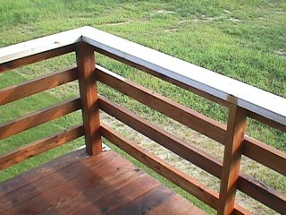
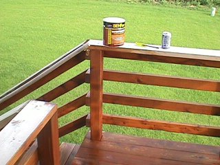
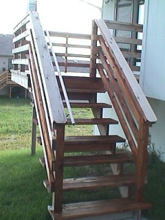
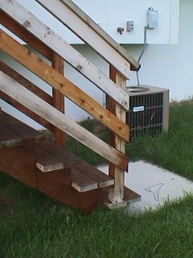
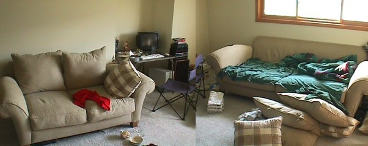

And 2.5 hours later (yes, I know I'm not done yet):



I was actually shooting for a color lighter than the stain on the middle
railing, but ended up mostly with a near-red brown as shown on the bottom.
I don't know if that's a factor of the greying from being untreated for 9
months or what... While I think it's all the same kind of wood, some of
it is very rough -- and turned very dark, while some of it is very
smooth, ending up much lighter.

The sample in the store gave me the impression that this would be slightly darker than a simple "wet" look. At the rate it actually colored, I think I would have been perfectly happy w/ the cans marked "clear." Doesn't look like "white cedar" to me.
Anyhoo, I did buy some furniture for downstairs a couple months back. BRAD
has converted the sofa into a surprisingly wide bed (wider than a single
matress, I'd wager) by removing the oh-so-fluffy pillows.
